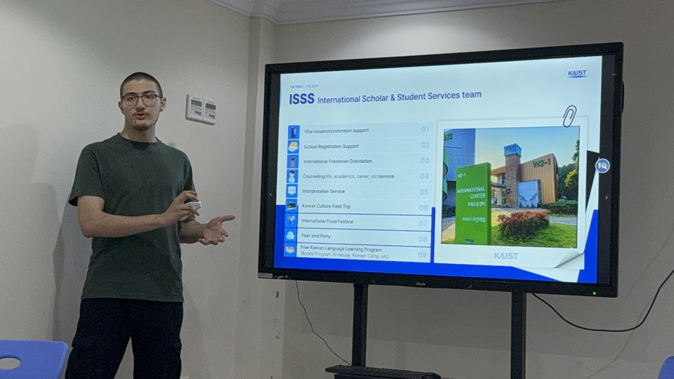

Daejeon
KAIST, a double degree, and the point where the projects got serious.
- Mechanical + Electrical Engineering, expected Feb 2029
- Micro-Robotics club since March 2025
- Project lead on ROBONEXUS — ₩6,000,000 secured
- KAIST Ambassador — presented KAIST back home in Saudi Arabia
- Robotics research intern at the FAIR Lab since August 2026
